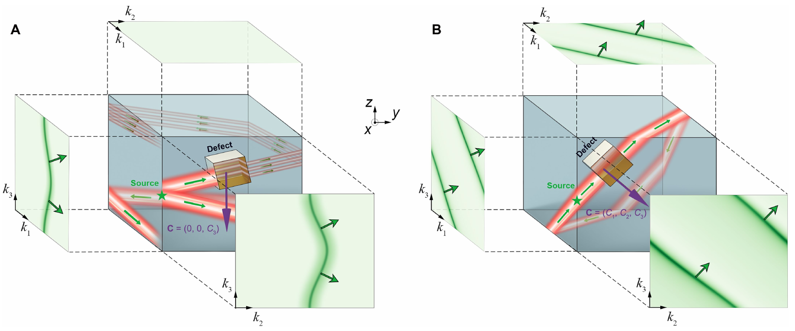
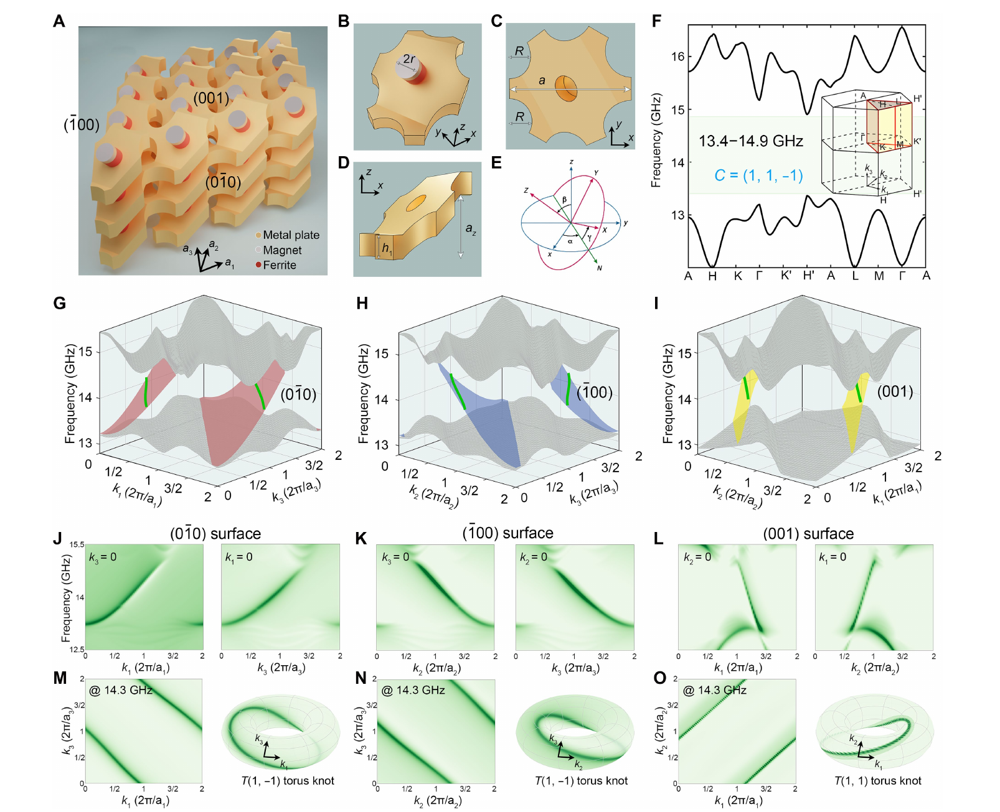
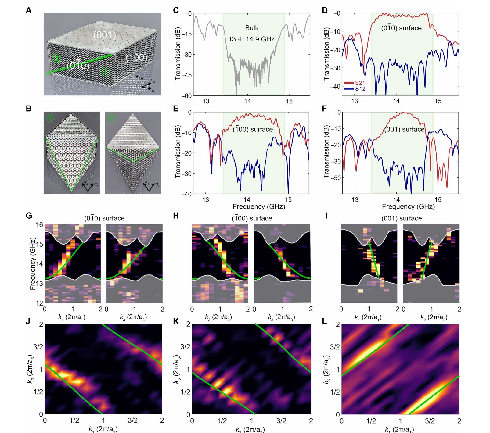
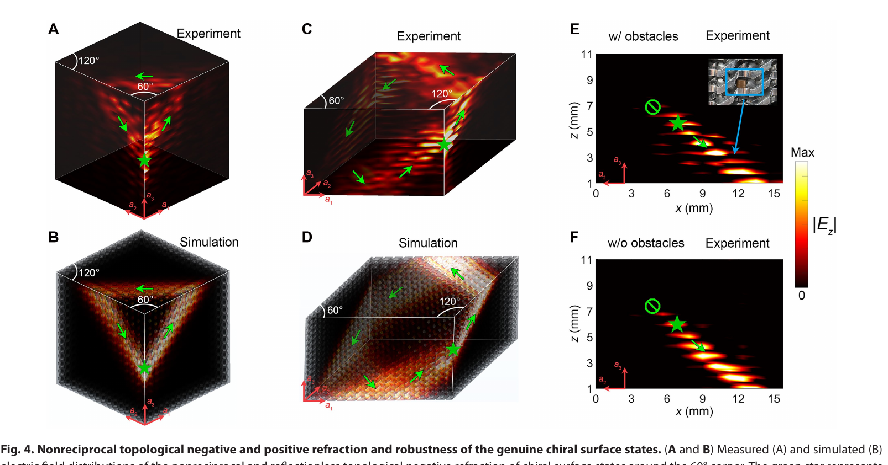
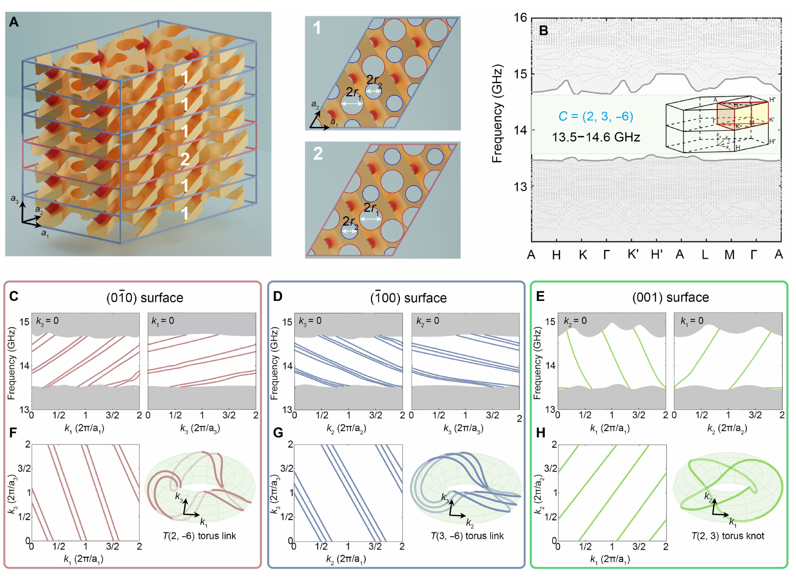

《Photonic arbitrary Chern vectors》精读报告
目录
- 书目信息与证据边界
- 一句话核心结论
- 研究背景与未解决问题
- 从陈向量到结构设计
- 数值模型样品与实验方法
- 主要证据链
- 实验数值与推断的边界
- 创新性判断
- 局限与待核查问题
- 与当前研究的关系
- 三个要点
- 来源与引用
书目信息与证据边界
- 题目：Photonic arbitrary Chern vectors
- 作者：Xiang Xi, Linyun Yang, Ziyao Wang, Bei Yan, Jing-Ming Chen, Yan Meng, Zhen-Xiao Zhu, Tao Xiao, Min-Qi Cheng, Zebin Zhu, Gui-Geng Liu, Hongcheng Wang, Xiankai Sun, Zhen Gao
- 期刊与状态：Science Advances 12, eaef3784 (2026)，Research Article，2026 年 7 月 8 日发表
- DOI：10.1126/sciadv.aef3784
- 本报告证据：用户提供的正式论文 PDF（8 页正文加参考文献页）与 Supplementary Materials（Supplementary Text 及 Figs. S1–S7）。书目信息与 DOI 同时由论文首页、补充材料首页和出版社记录交叉核对。
- 证据边界：下文中的“测量”仅指论文明确报告的微波实验；“计算/模拟”包括紧束缚模型、Wilson loop、COMSOL 能带/表面谱/场分布；“评述”是本报告基于作者证据作出的判断。未使用论文以外的未公开数据。
文中复合图取自原论文，保留全部面板、坐标轴、图例与插图。原文声明采用 CC BY-NC 4.0 许可；此处用于非商业学术评论，并在每图后明确标注来源。
一句话核心结论
这项工作的真正推进不是把某个陈数做得更大，而是把三维 Chern 绝缘体从单分量 $\mathbf C=(0,0,C_3)$ 推进到实验性的多分量 $\mathbf C=(1,1,-1)$：倾斜的旋磁偏置使三个原胞方向都具有非互易耦合，从而在所考察的六个晶面上产生手性表面态，并在棱边处实现非互易正/负折射；在此基础上，作者再用超胞调制数值展示 $\mathbf C=(2,3,-6)$，提出构造任意大整数陈向量的路径。前半部分有样品与测量支撑，后半部分仍是设计和数值论证。
研究背景与未解决问题
二维 Chern 绝缘体以标量 Chern 数刻画，并通过体边对应给出一维手性边界态。三维、完全有隙且破坏时间反演的系统需要三个整数来描述不同二维动量切片上的拓扑，其自然对象是陈向量（Chern vector）
$$ \mathbf C=(C_1,C_2,C_3). $$
既有三维光子 Chern 晶体主要实现 $\mathbf C=(0,0,C_3)$。这不是记号上的简化，而会直接限制表面态：与陈向量平行的四个侧面可承载手性表面态，而沿陈向量方向的输运不具同等的单向性；与其法向相关的另外两个面不出现相同类型的手性表面态。由此留下三个耦合问题：如何让所有三个陈向量分量同时非零，如何在所有所需晶面上获得二维非互易的表面输运，以及如何把表面 Fermi loop 的绕行数独立扩展为更一般的纽结或链环。

图 1｜概念问题。 A 是单分量陈向量：表面态只覆盖部分晶面，遇到缺陷时仍存在沿非手性方向散射的通道；B 是多分量陈向量：各相关表面的等频线均具有定向传播，表面态可绕过三维缺陷。该图是概念示意，不是实验数据；其作用是把“多一个非零分量”翻译为可观察的表面输运差异。来源：原论文 Fig. 1。
从陈向量到结构设计
拓扑量的定义与数值判定
作者把三维 Brillouin 区视为三维环面 $T^3$。固定一个动量分量 $k_\epsilon$ 后，在其余两个动量方向形成的二维环面上计算
$$ C_{\mu\nu}(k_\epsilon)=\frac{1}{2\pi}\iint_{T^2}\Omega_{\mu\nu}(\mathbf k)\,dk_\mu\,dk_\nu, $$
其中 $\Omega_{\mu\nu}$ 是 Berry 曲率。在目标频段保持三维完全带隙时，这些二维切片的 Chern 数不随固定动量连续变化，于是可组成
$$ \mathbf C=\bigl(C_{k_2k_3},C_{k_3k_1},C_{k_1k_2}\bigr). $$
数值上，作者不是直接积分 Berry 曲率，而是沿离散闭合路径计算 Wilson loop，并用 Wannier 中心相位在另一动量方向的绕行数确定各分量。补充材料 Fig. S3 分别给出三个切片族，得到 $C_1=1$、$C_2=1$、$C_3=-1$。这是数值拓扑反演，不是实验直接测得的整数。
倾斜三维 Haldane 模型
标准堆叠的三维 Haldane 模型保留主要位于平面内的复数次近邻耦合，因此得到 $\mathbf C=(0,0,-1)$。作者的关键操作有两步：
- 用倾斜的层间耦合替换部分原来的近邻耦合，使三个原胞方向在图连接关系上不再由“平面内 + 堆叠方向”分割；
- 将旋磁杆及其偏置磁场整体按 Euler 角旋转，使有效磁场 $\mathbf B_{\mathrm{eff}}$ 不再沿全局 $z$ 轴，而对三个原胞方向都产生非互易的复耦合。
因此，理论目标 $\mathbf C=(1,1,-1)$ 对应到结构上的必要条件不是简单旋转样品，而是同时改变层间连接和旋磁张量在全局坐标系中的分量。旋转后的磁导率张量出现 $\mu_{xz}$、$\mu_{yz}$ 等非对角分量，正是把非互易性从原来的 $xy$ 平面扩展到三维耦合网络的材料基础。

图 2｜理论到结构的闭环。 A–E 给出晶格、金属板、YIG/永磁体单元和旋转坐标；F 是计算的三维体能带，绿色区域为完全带隙；G–I 是三个代表性晶面的模拟表面谱；J–O 给出频率切片及 14.3 GHz 等频线。红、蓝、黄三组表面态跨越体带隙，等频线在相应表面 Brillouin 区中绕行，支持多分量陈向量的体表对应。整幅图以模拟和概念结构为主，不含实验测量。来源：原论文 Fig. 2。
从多分量到任意大整数分量
作者进一步采用 $2\times3\times6$ 超胞：沿 $\mathbf a_1$、$\mathbf a_2$、$\mathbf a_3$ 分别合并 2、3、6 个原胞，通过两种孔径以及特定层的孔位交换破坏原有平移周期，使超胞成为新的不可约原胞。作者据此得到 $\mathbf C=(2,3,-6)$；分量绝对值对应各方向合并的原胞数，符号由磁场方向决定。这个机制本质上是 Brillouin 区折叠、耦合调制与拓扑带隙重组的联合结果，不应理解为单纯把原陈向量按几何尺寸机械相乘。
数值模型样品与实验方法
- 全波模拟：COMSOL Multiphysics RF 模块；体能带使用三维周期边界；三个晶面的表面谱分别使用 $1\times15\times1$、$15\times1\times1$ 和 $1\times1\times15$ 超胞。
- 旋磁材料：商用 YIG 圆柱，半径 1.7 mm、高度 2 mm，饱和磁化强度 $M_s=1780$ G；论文采用 $\varepsilon_r\approx14.3+0.0002i$。
- 偏置：每根 YIG 由一对 Sm$2$Co$$ 永磁体提供约 0.26 T 的局域磁场；材料模型的阻尼系数取 0.0088。补充材料 Fig. S7 表明工作频段远离旋磁共振，作者据此认为目标频段内磁导率色散较弱。
- 样品：38 层激光切割的穿孔金属板，借助榫卯结构保持倾角；YIG 和永磁体嵌入盲孔。
- 测量：两根微波偶极天线连接 Keysight E5080 矢量网络分析仪；逐孔并沿 $z$ 方向扫描复电场，再对每个频率的空间场做二维 Fourier 变换，重构表面色散和等频线。
主要证据链
完全带隙与全表面非互易输运
论文结果。 对 $\mathbf C=(1,1,-1)$ 样品，计算给出 13.4–14.9 GHz 的三维完全带隙。实验体传输在同一频段出现明显抑制；在三个代表性晶面上，带隙内的正向传输 $S_{21}$ 明显高于反向传输 $S_{12}$。表面场的 Fourier 谱显示表面态跨越投影体带隙，测量强度分布与模拟色散的绿色曲线总体一致。

图 3｜核心实验闭环。 A、B 是实物样品与内部结构；C 是体传输抑制；D–F 是三个晶面的正反向传输；G–I 是测量的频率依赖表面谱，J–L 是 14.3 GHz 的等频线，绿色曲线为模拟。这里真正被测量的是传输和复电场分布；$\mathbf C=(1,1,-1)$ 仍来自与这些观测一致的数值拓扑判定。来源：原论文 Fig. 3。
棱边处的非互易正负折射
论文结果。 14.3 GHz 场映射显示，表面态在 60° 棱边附近跨越三个相邻表面，对应作者所称的无反射拓扑负折射；在另一种 120° 棱边配置中，波沿六个表面绕行，对应无反射拓扑正折射。补充材料 Fig. S4 用相邻晶面的等频线和棱边平行动量守恒解释：允许的折射波矢存在，而满足相位匹配的反射波矢不存在。
证据强度。 场图与模拟对传播路径的支持较强，但“reflectionless”主要来自可用通道分析和场分布中未见明显反射；论文没有给出独立的反射系数、功率守恒分解或误差条带，因此更稳妥的表述是“在测量分辨率和所测配置下未观察到明显反射”。
缺陷鲁棒性
论文结果。 在一个表面传播路径中加入金属障碍物后，测得的场绕过障碍并继续传播；与无障碍物的场图相比，主传播轨迹保持。补充材料 Fig. S5 还数值比较了 $\mathbf C=(0,0,-1)$ 与 $\mathbf C=(1,1,-1)$ 的缺陷绕行，支持二维非互易性减少可回散射方向。

图 4｜传播功能证据。 A、C 是测量，B、D 是对应模拟；E、F 是有/无金属障碍物的实验场图。该图同时支持跨面传播、正/负折射和缺陷绕行，但未提供插入损耗、反射率或多缺陷统计，因而不能据此断言任意缺陷下均无损。来源：原论文 Fig. 4。
任意陈向量与表面纽结
数值结果。 $\mathbf C=(2,3,-6)$ 超胞在三个晶面上产生多支手性表面态；其数目与平行于相应表面的陈向量分量相关。等频线在表面 Brillouin 区中的绕行形成 $T(2,-6)$ 和 $T(3,-6)$ torus links，以及 $T(2,3)$ torus knot。前两者的分量有非平凡最大公因数，因此分裂为多条互相链接的曲线；$2$ 与 $3$ 互素，因而形成单条纽结。

图 5｜推广机制。 A 是 $2\times3\times6$ 超胞及孔径调制；B 是计算体能带；C–E 是三组模拟表面谱；F–H 是等频线和对应 torus knot/link。该图没有实验照片或测量色图，故只证明设计在所用模型中的可实现性。来源：原论文 Fig. 5。
实验数值与推断的边界
| 论断 | 直接可观察量 | 证据类型 | 本报告判断 |
|---|---|---|---|
| 存在 13.4–14.9 GHz 完全体带隙 | 体传输抑制；计算体能带 | 实验 + 全波模拟 | 实验支持带隙频段，但“完全”仍依赖三维能带计算 |
| 三个陈向量分量为 $(1,1,-1)$ | Wilson loop / Wannier 中心绕行 | 数值拓扑反演 | 非直接测量；与全表面谱和非互易传输相互印证 |
| 六个晶面均有手性表面态 | 三组代表晶面的 $S$ 参数、表面谱和等频线 | 实验 + 模拟 | 对所测对称相关晶面证据充分；不是对任意切割面的逐一测量 |
| 棱边处无反射正/负折射 | 复电场图与等频线相位匹配 | 实验 + 模拟 + 解释 | 传播路径可信；“零反射”缺少定量反射率验证 |
| 金属缺陷下鲁棒 | 单一障碍物前后场图 | 实验；补充材料含对比模拟 | 证明一个配置下的绕行，不等于系统性容差结论 |
| 任意陈向量可构造 | $C=(2,3,-6)$ 超胞能带与表面谱 | 模拟 + 设计外推 | 给出一般构造思路，但只展示一个非平凡大整数例子 |
| 可推广到太赫兹/光学 | 讨论中的材料与非线性建议 | 作者推断 | 本文未进行高频器件设计、损耗评估或实验 |
创新性判断
- 原理层面：把三维光子 Chern 绝缘体的实验对象从单分量陈向量推进到多分量陈向量，使体表对应真正表现为二维表面上的双方向非互易性。
- 设计层面：把倾斜层间连接与旋磁张量旋转绑定起来，建立“目标陈向量 → 三维复耦合 → 倾斜 YIG/金属板单元”的因果链，而不是只做坐标旋转。
- 实验证明层面：同一块三维样品中同时测量多个表面的非互易传输、表面色散、等频线、跨棱折射和缺陷绕行，证据类型互补。
- 推广层面：以超胞周期和孔径调制控制各陈分量的整数倍率，并把陈向量分量与表面 torus knot/link 的绕行数联系起来。
- 应用层面：论文展示了可用于三维单向路由和跨面折射的物理功能，但尚未形成带有端口指标、效率和带宽规范的器件原型。
局限与待核查问题
- 实验只覆盖 $\mathbf C=(1,1,-1)$。 “任意”陈向量的核心例子 $\mathbf C=(2,3,-6)$ 是数值结构，没有制作和测量。
- Fig. 5 的带隙范围存在文图差异。 正文描述 $\mathbf C=(2,3,-6)$ 的完全带隙为 13.4–14.9 GHz，而 Fig. 5B 图内标注约为 13.5–14.6 GHz。报告不替作者选择其一；后续复现应以原始模型重新计算并核对。
- 缺少定量散射与效率指标。 正/负折射和缺陷绕行主要由场图展示，没有反射率、透射效率、传播长度、群速度色散或功率预算。
- 统计与容差不足。 未见多样品统计、装配误差、倾角误差、磁场不均匀性、YIG 参数离散性或孔径容差扫描。
- 尺度扩展仍是外推。 微波结构依赖永磁体、金属板和厘米级晶格；太赫兹/光学实现需要不同的非互易机制，并重新评估损耗、材料色散和制造可行性。
- “任意”的工程代价随整数增大。 超胞尺寸随目标分量增大，带折叠、模式拥挤、带隙保持和损耗累积可能成为限制；本文只用一个 $2\times3\times6$ 例子展示原则。
- 拓扑整数不是实验直接观测量。 现有实验是对体表对应后果的强验证，但仍依赖 COMSOL 本征模与 Wilson loop 对 $\mathbf C$ 的归属。
与当前研究的关系
对三维拓扑光子晶体与表面态计算
这篇论文最可复用的不是几何外形，而是验证顺序：先确认三维完全体带隙，再对三个独立二维切片族计算 Wilson loop，随后分别构造三个晶面超胞，最后用等频线的方向性预测跨棱传播。对 COMSOL 或紧束缚研究，这套顺序可直接转化为“体能带—拓扑不变量—表面谱—有限结构场图”的验收链，能避免只凭有限样品中的单向场图判断拓扑。
与 axion insulator 语言的边界
评述。 陈向量与 axion angle $\theta$ 不是同一拓扑量的不同写法。本文的 $\mathbf C\in\mathbb Z^3$ 描述破坏时间反演的三维 Chern 相，并直接决定二维动量切片的量子化 Hall 型响应与手性表面谱；axion insulator 通常讨论在特定对称性约束下量子化的标量 $\theta$，其理想表面往往是有隙的，并可表现半量子化表面 Hall 响应。因此，在比较 axion string、CDW/Weyl 质量项或磁电响应时，应明确区分：本文操控的是三方向整数 Chern 数据，而不是连续或离散的标量磁电耦合。
对非互易器件设计
真正有器件价值的是不同表面等频线之间的相位匹配：棱边平行动量守恒、入射面和出射面可用态的方向、以及反射通道是否存在，三者共同决定正折射、负折射或绕行路径。若要转化为隔离器或三维路由器，下一步必须增加端口化的 $S$ 参数、功率效率、有限带宽和缺陷容差，而不是只延续场图展示。
三个要点
- 多分量陈向量改变的是表面输运维数。 $\mathbf C=(1,1,-1)$ 使所考察的六个晶面都出现二维非互易手性表面态，而不只是把拓扑数值从 1 改成更复杂的数组。
- 实验与“任意”推广要分开引用。 倾斜磁光晶体、全表面传输和棱边折射有实验支撑；$\mathbf C=(2,3,-6)$、多模表面态及 torus knot/link 是超胞数值结果。
- 最强贡献是完整的设计—证据闭环。 倾斜复耦合给出目标拓扑，Wilson loop 判定陈向量，表面谱与等频线连接体表对应，微波场测量再验证跨面传播；但效率、容差和高频可扩展性仍未解决。